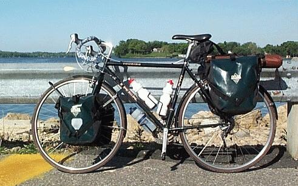
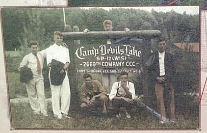
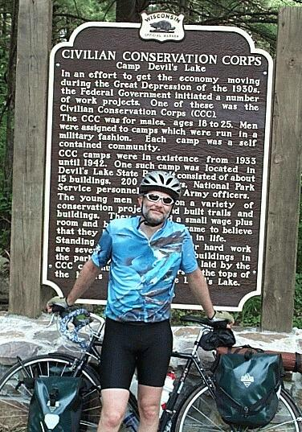

| Announcing the Release of the Madison to Seattle Digression | Field Test Version 0.1beta | |||||||||||||||||||||||||||||||
The "Digression" waits to board the ferry at Merrimac  Civilian Conservation Corps Photo one of many on display  The "Digression" arrives at Devil's Lake 
|
Madison, WI With little initial fanfare, the Madison to Seattle Digression Field Test was launched on Thursday May 18, 2001. The test was completed on Friday the 19th with very few hitches claims Joe King, field test engineer. "The weight is about what we expected but the overall package was significantly heavier than previous estimates," King reported shortly after completing the 105 mile test run. Indeed the total package of rider, gear, and bike weighed in at a whopping 214 pounds -- without water bottles! "We took our weight measurements after the two day test, that way if a bug should show up in packing that was corrected by buying a heavy item during the test, it would not escape the measurement," King explained. When asked how he expected the engineers on the project would reduce the weight, King shrugged saying, "Eat less. We hit all our targets on the weight of the gear so we're going to have to take a look at the rider." The gear included front and rear panniers, a seat bag, maps, tent, sleeping bag, tools, clothes, camera, toiletries, and a camp mattress strapped to the rear carrier. Taken together, the gear came in at 27 pounds. With racks but no water bottles, the bike weighed 31 pounds. "That's the rub," King said, "with the bike coming in at 31 [pounds], there's no way to get the load [gear plus bike] to 50 pounds or less." King looked off in the distance for a moment and commented that he could probably get by with fewer fingers. Other features of the "Digression" met expectations. The cockpit was reported to have an unobstructed view from which a Sandhill crane and two little ones were spotted. The handling and feeling of the "Digression" was surprisingly supple according to King who called South Shore Drive near Devil's Lake, "a hell of a ride." "I was especially pleased to see photos of the CCC camp at Devil's Lake," King said. King's father was in the CCC just prior to WWII. "It was not hard to imagine my father living at a camp like the one depicted in the photos on display." His father's camp would have been in Nevada, however. When asked about the final release date King's face suddenly turned white with fear. He just muttered, "July 8th. It's just gotta be July 8th," and he ended the interview then and there by just wandering off muttering to himself. |
|||||||||||||||||||||||||||||||
|
|